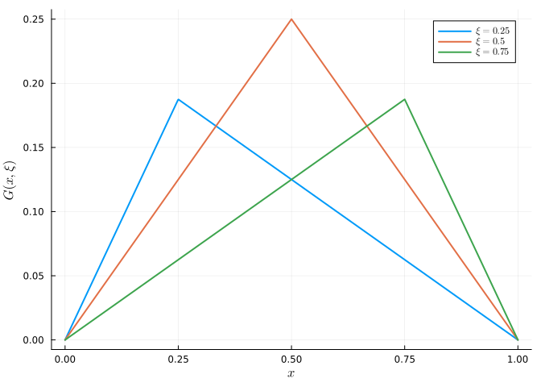
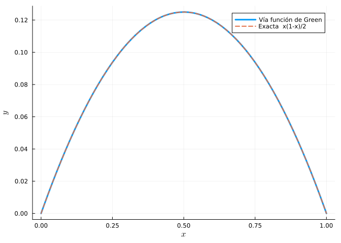
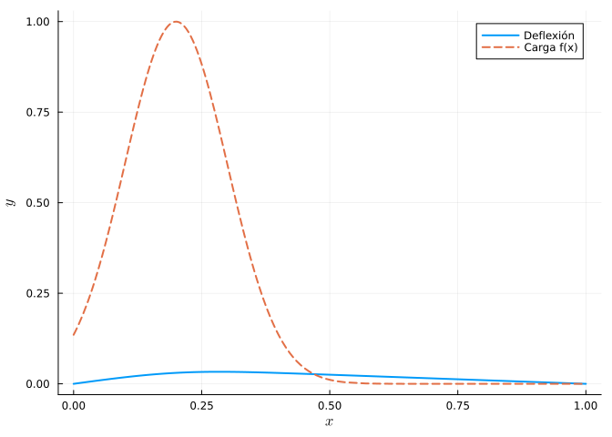
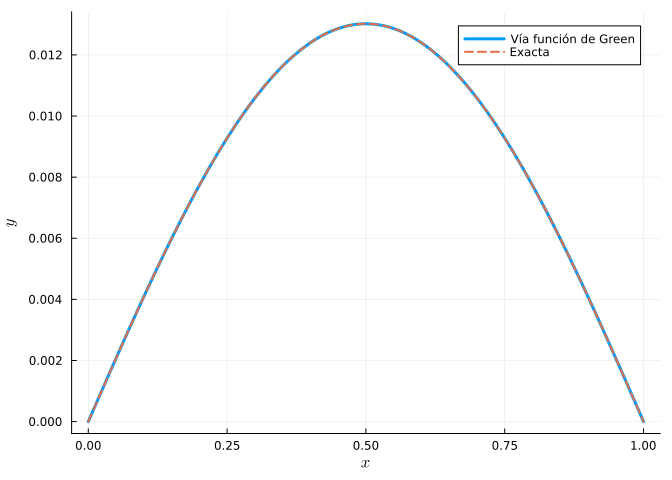
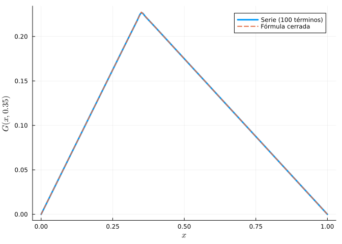
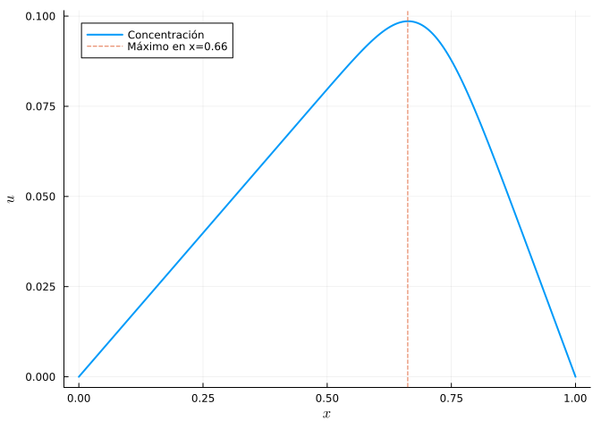

9 Función de Green
La función de Green \(G(x, \xi)\) de un operador diferencial lineal \(L\) con ciertas condiciones de contorno es la respuesta del sistema a una fuente puntual (una delta de Dirac) situada en \(\xi\):
\[ L\,G(x, \xi) = \delta(x - \xi). \]
Una vez conocida \(G\), la solución del problema \(Ly = f(x)\) con las mismas condiciones de contorno se obtiene por superposición integrando la respuesta a cada fuente elemental:
\[ y(x) = \int G(x, \xi)\,f(\xi)\,d\xi. \]
La función de Green codifica toda la información del operador y las condiciones de contorno, y es una herramienta central en Física (electrostática, mecánica cuántica) e Ingeniería (deflexión de vigas, teoría de circuitos).
9.1 Ejercicios resueltos
Para la realización de esta práctica se requieren los siguientes paquetes:
using SymPyPythonCall # Cálculo simbólico e integración.
using Plots # Dibujo de gráficas.
using LaTeXStrings # Código LaTeX en los gráficos.
using QuadGK # Integración numérica.
NotaVersiones de Julia y de los paquetes utilizados
Status `~/.julia/environments/v1.12/Project.toml` [b964fa9f] LaTeXStrings v1.4.0 [91a5bcdd] Plots v1.41.6 [1fd47b50] QuadGK v2.11.3 [bc8888f7] SymPyPythonCall v0.5.1
Ejercicio 9.1 Función de Green de una cuerda elástica. La deflexión \(y(x)\) de una cuerda tensa de longitud 1, fija en los extremos y sometida a una densidad de carga \(f(x)\), satisface
\[ -y'' = f(x), \qquad y(0) = y(1) = 0. \]
Construir la función de Green \(G(x, \xi)\) resolviendo \(-G'' = \delta(x-\xi)\) con las condiciones de contorno.
NotaAyudaFuera de \(x = \xi\), \(G'' = 0\), luego \(G\) es lineal a trozos. Se impone: \(G(0,\xi)=G(1,\xi)=0\), continuidad en \(x=\xi\) y un salto unitario en la derivada, \(G'(\xi^+) - G'(\xi^-) = -1\). El resultado es \(G(x,\xi) = x(1-\xi)\) si \(x<\xi\) y \(\xi(1-x)\) si \(x>\xi\).
TipSoluciónBuscamos \(G\) lineal a cada lado de \(\xi\): \(G = a x\) para \(x<\xi\) (cumple \(G(0)=0\)) y \(G = b(1-x)\) para \(x>\xi\) (cumple \(G(1)=0\)). Continuidad y salto de la derivada:
using SymPyPythonCall @syms x xi a b # Continuidad en x = xi: a*xi = b*(1 - xi) # Salto de la derivada: (-b) - a = -1 coef = solve([a*xi - b*(1 - xi), -b - a + 1], [a, b])\[\begin{equation*}\begin{cases}b & \text{=>} &\xi\\a & \text{=>} &1 - \xi\\\end{cases}\end{equation*}\]
De donde \(a = 1-\xi\), \(b = \xi\), y la función de Green es
\[ G(x, \xi) = \begin{cases} x(1-\xi) & 0\le x \le \xi \\ \xi(1-x) & \xi \le x \le 1.\end{cases} \]
using Plots, LaTeXStrings G(x, ξ) = x <= ξ ? x*(1-ξ) : ξ*(1-x) ξs = [0.25, 0.5, 0.75] plt = plot(xlab = L"x", ylab = L"G(x,\xi)") for ξ in ξs plot!(plt, xx -> G(xx, ξ), 0, 1, lw = 2, label = L"\xi=%$ξ") end plt
Cada \(G(\cdot,\xi)\) es la deformación de la cuerda bajo una carga puntual en \(\xi\): dos segmentos rectos que forman un pico en \(\xi\), como una cuerda de la que se tira en un punto.
Usar \(G\) para resolver el problema con carga uniforme \(f(x) = 1\) (peso propio) y comparar con la solución exacta \(y(x) = \frac{x(1-x)}{2}\).
TipSoluciónusing QuadGK y(x) = quadgk(ξ -> G(x, ξ) * 1.0, 0, 1)[1] yexacta(x) = x*(1-x)/2 plot(y, 0, 1, lw = 3, label = "Vía función de Green", xlab = L"x", ylab = L"y") plot!(yexacta, 0, 1, lw = 2, ls = :dash, label = "Exacta x(1-x)/2")
Ambas curvas coinciden: integrar la función de Green contra la carga reproduce la parábola de deflexión. La ventaja es que, con la misma \(G\), se resuelve cualquier carga \(f\) sin volver a integrar la EDO.
Resolver con una carga concentrada cerca de un extremo, \(f(x) = e^{-50(x - 0.2)^2}\), integrando la función de Green.
TipSoluciónf(x) = exp(-50*(x - 0.2)^2) yG(x) = quadgk(ξ -> G(x, ξ) * f(ξ), 0, 1)[1] plot(yG, 0, 1, lw = 2, label = "Deflexión", xlab = L"x", ylab = L"y") plot!(f, 0, 1, lw = 2, ls = :dash, label = "Carga f(x)")
La deflexión máxima se desplaza hacia el punto de aplicación de la carga (cerca de \(x = 0.2\)), como cabe esperar físicamente.
Ejercicio 9.2 Función de Green de una viga (respuesta a carga puntual). La deflexión de una viga biapoyada de longitud 1 satisface \(y^{(4)} = f(x)\) con \(y(0)=y(1)=0\), \(y''(0)=y''(1)=0\). Su función de Green, la deflexión bajo una carga puntual unidad en \(\xi\), es
\[ G(x, \xi) = \begin{cases} \dfrac{(1-\xi)x}{6}\left[(2-\xi)\xi - x^2\right] & x \le \xi \\[2mm] \dfrac{(1-x)\xi}{6}\left[(2-x)x - \xi^2\right] & x \ge \xi. \end{cases} \]
Verificar numéricamente que integrando \(G\) contra la carga uniforme \(f = 1\) se recupera la deformada de la viga del capítulo 4, \(y(x) = \frac{1}{24}(x^4 - 2x^3 + x)\).
TipSolución
using QuadGK, Plots, LaTeXStrings
function Gviga(x, ξ)
if x <= ξ
(1-ξ)*x/6 * ((2-ξ)*ξ - x^2)
else
(1-x)*ξ/6 * ((2-x)*x - ξ^2)
end
end
yG(x) = quadgk(ξ -> Gviga(x, ξ), 0, 1)[1]
yexacta(x) = (x^4 - 2x^3 + x)/24
plot(yG, 0, 1, lw = 3, label = "Vía función de Green", xlab = L"x", ylab = L"y")
plot!(yexacta, 0, 1, lw = 2, ls = :dash, label = "Exacta")
Las dos curvas coinciden. La función de Green de la viga es más suave (de clase \(C^2\)) que la de la cuerda, reflejo del mayor orden del operador.
Ejercicio 9.3 Función de Green por desarrollo en autofunciones. Para el operador \(L = -\frac{d^2}{dx^2}\) con \(y(0)=y(1)=0\), las autofunciones son \(\phi_n(x) = \sqrt2\sin(n\pi x)\) con autovalores \(\lambda_n = (n\pi)^2\). La función de Green admite el desarrollo espectral
\[ G(x, \xi) = \sum_{n=1}^{\infty} \frac{\phi_n(x)\,\phi_n(\xi)}{\lambda_n} = \sum_{n=1}^{\infty} \frac{2\sin(n\pi x)\sin(n\pi \xi)}{(n\pi)^2}. \]
Comprobar que esta serie converge a la función de Green triangular del Ejercicio 9.1.
NotaAyuda
Truncar la serie a \(N\) términos y compararla con la fórmula cerrada \(G(x,\xi)\) para un \(\xi\) fijo.
TipSolución
using Plots, LaTeXStrings
Gserie(x, ξ; N = 100) = sum(2*sin(n*π*x)*sin(n*π*ξ)/(n*π)^2 for n in 1:N)
Gexacta(x, ξ) = x <= ξ ? x*(1-ξ) : ξ*(1-x)
ξ = 0.35
plot(x -> Gserie(x, ξ), 0, 1, lw = 3, label = "Serie (100 términos)",
xlab = L"x", ylab = L"G(x,0.35)")
plot!(x -> Gexacta(x, ξ), 0, 1, lw = 2, ls = :dash, label = "Fórmula cerrada")
La serie espectral reproduce el pico triangular. Este enfoque (desarrollar la función de Green en las autofunciones del operador) es la base del método de Fourier y conecta la función de Green con la resolución por separación de variables del capítulo anterior.
Ejercicio 9.4 Aplicación: contaminación con fuente distribuida (estado estacionario). En un canal de longitud 1 con extremos limpios (\(u(0)=u(1)=0\)), la concentración estacionaria de un contaminante que se difunde y se genera a un ritmo \(f(x)\) satisface \(-u'' = f(x)\). Una fábrica vierte según \(f(x) = 3\,e^{-100(x-0.7)^2}\) (un foco intenso cerca de \(x = 0.7\)).
Calcular la concentración resultante usando la función de Green y determinar dónde es máxima.
TipSolución
using QuadGK, Plots, LaTeXStrings
G(x, ξ) = x <= ξ ? x*(1-ξ) : ξ*(1-x)
f(x) = 3*exp(-100*(x - 0.7)^2)
u(x) = quadgk(ξ -> G(x, ξ)*f(ξ), 0, 1)[1]
xs = range(0, 1, length = 300)
us = u.(xs)
xmax = xs[argmax(us)]
plot(xs, us, lw = 2, label = "Concentración", xlab = L"x", ylab = L"u")
vline!([xmax], ls = :dash, label = "Máximo en x=$(round(xmax,digits=2))")
La concentración máxima se sitúa en torno a \(x \approx 0.66\), justo bajo el foco emisor, y decae linealmente hacia los extremos limpios. La función de Green permite estudiar de un vistazo el efecto de mover la fábrica: basta reintegrar \(G\) contra el nuevo perfil de emisión.
9.2 Ejercicios propuestos
Ejercicio 9.5 Construir la función de Green del operador \(-y''\) con condiciones de contorno mixtas \(y(0)=0\), \(y'(1)=0\) y usarla para resolver \(-y''=x\).
Ejercicio 9.6 Física. Hallar la función de Green del operador de Helmholtz \(-y'' - k^2 y\) con \(y(0)=y(1)=0\) (relevante en acústica) y estudiar qué ocurre cuando \(k^2\) se aproxima a un autovalor \(\lambda_n\) (resonancia).
Ejercicio 9.7 Obtener numéricamente la función de Green discreta de \(-y''\) como la inversa de la matriz de diferencias finitas del laplaciano y comparar sus columnas con la \(G\) analítica.
Ejercicio 9.8 Ingeniería. Construir la función de Green de una viga en voladizo y calcular la deflexión del extremo libre bajo una carga puntual aplicada en su punto medio.